Migrating from Hexagon-nn¶
Developers familiar with Hexagon-nn APIs can follow this short guide to learn how to translate Hexagon-nn API function calls into the equivalent QNN API function calls.
Both Hexagon-nn and QNN follow a similar process to create and execute a neural network (graph).
{kind=link}
The examples below will use the following format to show comparisons of Hexagon-nn vs QNN code blocks. Notable APIs will be highlighted within the code blocks.
1hexagon_nn_init((hexagon_nn_nn_id *) &nng_id);
1QnnBackend_create(Qnn_LogHandle_t logger, const (QnnBackend_Config_t **) config, (Qnn_BackendHandle_t*) backend);
In the examples that follow, error handling is shown but not in all cases to limit the amount of code clutter in the examples. A full solution would require more robust error handling which is left as an exercise for the developer.
To illustrate the various APIs the following simple graph (migration) will serve as an example for this tutorial.
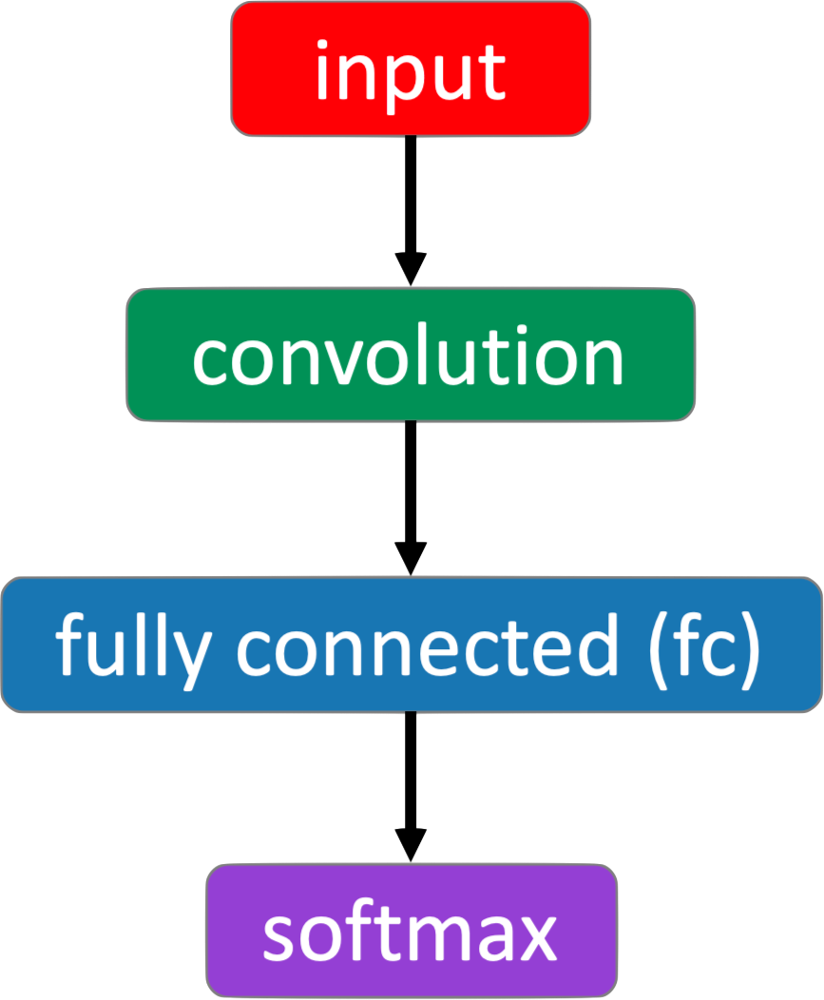{kind=link}
Note
This tutorial assumes that you are familiar with all the concepts required to create and run a quantized neural network with Hexagon-nn. The topic of quanitized networks, input and output tensors will not be covered here. For the purposes of this guide all tensor data is assumed to be in a quantized format.
Create Graph¶
Create an instance of the neural network graph.
1 hexagon_nn_nn_id nng_id = 0;
2
3 if (hexagon_nn_config() != 0)
4 {
5 printf("hexagon_nn_config failed.\n");
6 }
7 else if (hexagon_nn_init((hexagon_nn_nn_id *) &nng_id))
8 {
9 printf("hexagon_nn_init failed.\n");
10 }
Graphs for QNN require the following objects to be created:
log (optional)
backend
device
context
graph (associated with context)
1Qnn_LogHandle_t logger{nullptr};
2Qnn_BackendHandle_t backend{nullptr};
3Qnn_DeviceHandle_t device{nullptr};
4
5QnnLog_Callback_t logCallBack{nullptr};
6if (QNN_SUCCESS != QnnLog_create(logCallBack, QNN_LOG_LEVEL_ERROR, &logger)) {
7 printf("QNN log creation failed.\n");
8}
9const QnnBackend_Config_t *backendConfigs{nullptr};
10if (QNN_SUCCESS != QnnBackend_create(logger, &backendConfigs, &backend)) {
11 printf("QNN backend creation failed.\n");
12} else {
13 const QnnDevice_Config_t *deviveConfigs{nullptr};
14 if (QNN_SUCCESS != QnnDevice_create(logger, &deviveConfigs, &device)) {
15 printf("QNN device creation failed.\n");
16 } else {
17 Qnn_ContextHandle_t context{nullptr};
18 const QnnContext_Config_t *contextConfigs{nullptr};
19 if (QNN_SUCCESS != QnnContext_create(backend, device, &contextConfigs, &context)) {
20 printf("QNN context creation failed.\n");
21 } else {
22 // choose any name to identify the graph
23 const char* graphName = "migrate";
24 const QnnGraph_Config_t *graphConfigs{nullptr};
25 Qnn_GraphHandle_t graph{nullptr};
26 if (QNN_SUCCESS != QnnGraph_create(context, graphName, &graphConfigs, &graph)) {
27 printf("QNN graph creation failed.\n");
28 }
29 }
30 }
31}
Add Nodes¶
This next section will cover adding nodes to the graph. Nodes are added with the following APIs.
1int hexagon_nn_append_node( ... );
2int hexagon_nn_append_const_node( ... );
1Qnn_ErrorHandle_t QnnTensor_createGraphTensor( ... );
2Qnn_ErrorHandle_t QnnGraph_addNode( ... );
Nodes in Hexagon-nn graphs use unique IDs to identify graph nodes. Node weights, biases, and parameters are generally added as constant nodes. The diagram below shows the simple example graph with Hexagon-nn unique IDs.
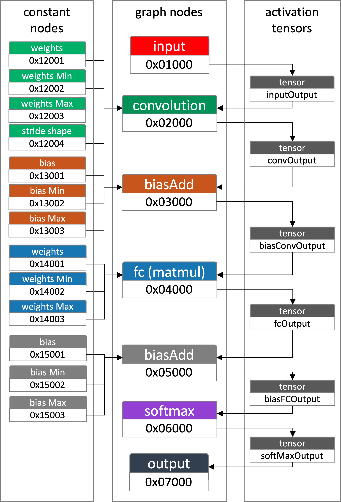{kind=link}
In QNN nodes the weights, biases and parameters are added as tensors with static data. The diagram below shows the simple example graph with QNN names to help identify each node.
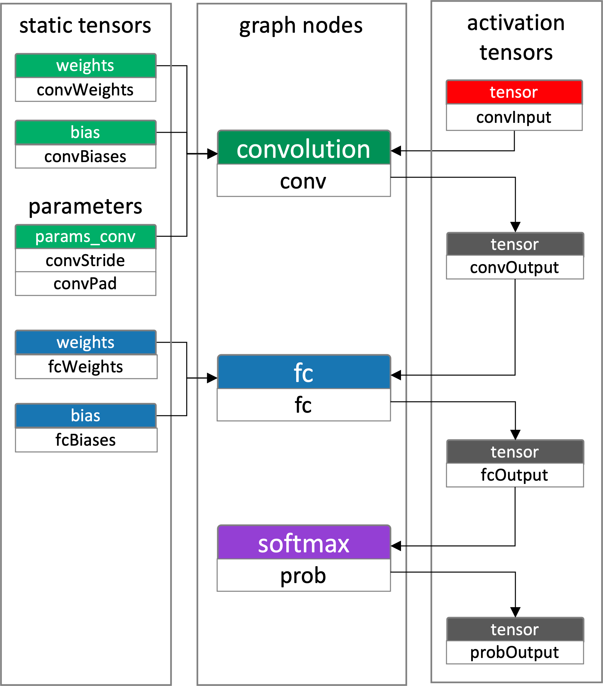{kind=link}
Adding Tensors and Nodes¶
Each node operation is associated with a set of input and output tensors. The node operation definition defines the type and ordering of the inputs and outputs.
Hexagon-nn
A node can be a constant node or a graph node. Nodes are added to the graph via hexagon_nn_append_node or hexagon_nn_append_const_node.
For example,
1 // add constant nodes
2 static uint8_t weights[108] = { 219, 39, 82, 157, 172, 80, ...};
3
4 ret = hexagon_nn_append_const_node(nng_id, 0x12001, 3, 3, 3, 4, (const uint8_t *) weights, 108);
Each graph node is supplied with a set of inputs and outputs. These will include the constant nodes and activation tensors. Each of these are identified by a node ID and an index value.
These inputs and outputs are specified as lists when adding nodes into the graph. The lists contain node ID references which are used to create the connectivity of the graph.
1 // define the input
2 hexagon_nn_input inputs[] = {
3 { // output of the INPUT node
4 .src_id = 0x01000,
5 .output_idx = 0,
6 },
7 { // weights
8 .src_id = 0x12001,
9 .output_idx = 0,
10 },
11
12 ...
13 };
14
15 // define the output
16 hexagon_nn_output outputs[] = {
17 {.rank = 4,
18 .max_sizes = {1, 30, 30, 4, 0, 0, 0, 0},
19 .elementsize = 4,
20 .zero_offset = 0,
21 .stepsize = 0.0},
22
23 ...
24
25 {.rank = 4,
26 .max_sizes = {1, 1, 1, 1, 0, 0, 0, 0},
27 .elementsize = 4,
28 .zero_offset = 0,
29 .stepsize = 0.0}
30 };
31
32 // add the node to the graph
33 ret = hexagon_nn_append_node(nng_id, 0x02000, OP_QuantizedConv2d_8x8to32, NN_PAD_VALID, inputs, 7, outputs, 3);
QNN
The Qnn_Tensor_t data structure is used to define the attributes when creating a tensor. Before a node can be created, the set of activation and parameter tensors connected to it need to be created.
Note that the tensor ID does not need to be set. When calling the QnnTensor_createGraphTensor function, a tenor ID will be generated and written back to tensor.v2.id. And creating a tensor with a name that duplicates a previously created tensor name in the graph results in undefined behaviour.
For example,
1 // input (activation tensor)
2 uint32_t inputDimensions[] = {1, 32, 32, 3};
3 Qnn_Tensor_t inputTensor = QNN_TENSOR_INIT;
4 inputTensor.version = QNN_TENSOR_VERSION_2;
5 inputTensor.v2.id = 0;
6 inputTensor.v2.name = "input";
7 inputTensor.v2.type = QNN_TENSOR_TYPE_APP_WRITE;
8 inputTensor.v2.dataFormat = QNN_TENSOR_DATA_FORMAT_FLAT_BUFFER;
9 inputTensor.v2.dataType = QNN_DATATYPE_UFIXED_POINT_8;
10 inputTensor.v2.quantizeParams.encodingDefinition = QNN_DEFINITION_DEFINED;
11 inputTensor.v2.quantizeParams.quantizationEncoding = QNN_QUANTIZATION_ENCODING_SCALE_OFFSET;
12 inputTensor.v2.quantizeParams.scaleOffsetEncoding.scale = 0.0256975870579481;
13 inputTensor.v2.quantizeParams.scaleOffsetEncoding.offset = -132;
14 inputTensor.v2.rank = 4;
15 inputTensor.v2.dimensions = inputDimensions;
16 inputTensor.v2.memType = QNN_TENSORMEMTYPE_RAW;
17 inputTensor.v2.clientBuf = QNN_CLIENT_BUFFER_INIT
18 inputTensor.v2.isDynamicDimensions = nullptr;
19 inputTensor.v2.sparseParams = QNN_SPARSE_PARAMS_INIT;
20 inputTensor.v2.isProduced = 0;
21
22 ret = QnnTensor_createGraphTensor(graph, &inputTensor);
23
24 // weights (static tensor)
25 static uint8_t weights[] = {232, 177, 126, 160, 15, 171, ...};
26 uint32_t weightsDimensions[] = {3, 3, 3, 4};
27 Qnn_Tensor_t weightsTensor = QNN_TENSOR_INIT;
28 weightsTensor.version = QNN_TENSOR_VERSION_2;
29 weightsTensor.v2.id = 0;
30 weightsTensor.v2.name = "weights";
31 weightsTensor.v2.type = QNN_TENSOR_TYPE_STATIC;
32 weightsTensor.v2.dataFormat = QNN_TENSOR_DATA_FORMAT_FLAT_BUFFER;
33 weightsTensor.v2.dataType = QNN_DATATYPE_UFIXED_POINT_8;
34 weightsTensor.v2.quantizeParams.encodingDefinition = QNN_DEFINITION_DEFINED;
35 weightsTensor.v2.quantizeParams.quantizationEncoding = QNN_QUANTIZATION_ENCODING_SCALE_OFFSET;
36 weightsTensor.v2.quantizeParams.scaleOffsetEncoding.scale = 0.0012544898781925;
37 weightsTensor.v2.quantizeParams.scaleOffsetEncoding.offset = -129;
38 weightsTensor.v2.rank = 4;
39 weightsTensor.v2.dimensions = weightsDimensions;
40 weightsTensor.v2.memType = QNN_TENSORMEMTYPE_RAW;
41 weightsTensor.v2.clientBuf.data = weights;
42 weightsTensor.v2.clientBuf.dataSize = 108;
43 weightsTensor.v2.isDynamicDimensions = nullptr;
44 weightsTensor.v2.sparseParams = QNN_SPARSE_PARAMS_INIT;
45 weightsTensor.v2.isProduced = 0;
46
47 ret = QnnTensor_createGraphTensor(graph, &weightsTensor);
48
49 // output (activation tensor)
50 uint32_t outputDimensions[] = {1, 30, 30, 4};
51 Qnn_Tensor_t outputTensor = QNN_TENSOR_INIT;
52 outputTensor.version = QNN_TENSOR_VERSION_2;
53 outputTensor.v2.id = 0;
54 outputTensor.v2.name = "output";
55 outputTensor.v2.type = QNN_TENSOR_TYPE_APP_READ;
56 outputTensor.v2.dataFormat = QNN_TENSOR_DATA_FORMAT_FLAT_BUFFER;
57 outputTensor.v2.dataType = QNN_DATATYPE_UFIXED_POINT_8;
58 outputTensor.v2.quantizeParams.encodingDefinition = QNN_DEFINITION_DEFINED;
59 outputTensor.v2.quantizeParams.quantizationEncoding = QNN_QUANTIZATION_ENCODING_SCALE_OFFSET;
60 outputTensor.v2.quantizeParams.scaleOffsetEncoding.scale = 0.0166513100266457;
61 outputTensor.v2.quantizeParams.scaleOffsetEncoding.offset = -107;
62 outputTensor.v2.rank = 4;
63 outputTensor.v2.dimensions = outputDimensions;
64 outputTensor.v2.memType = QNN_TENSORMEMTYPE_RAW;
65 outputTensor.v2.clientBuf = QNN_CLIENT_BUFFER_INIT;
66 outputTensor.v2.isDynamicDimensions = nullptr;
67 outputTensor.v2.sparseParams = QNN_SPARSE_PARAMS_INIT;
68 outputTensor.v2.isProduced = 0;
69
70 ret = QnnTensor_createGraphTensor(graph, &outputTensor);
Unlike Hexagon-nn where the weights and weights min/max are set in multiple constant nodes, QNN directly includes the quantization scale and offset values during tensor creation.
Parameters for a node are defined via an array Qnn_Param_t parameters, each of which are uniquely named. The parameter values can apply to tensors or scalars, with specific values defined in the operation definitions.
1 // parameter tensors
2 uint32_t pad[] = {0, 0, 0, 0};
3 uint32_t padDimensions[] = {2, 2};
4 Qnn_Tensor_t padTensor = QNN_TENSOR_INIT;
5 padTensor.version = QNN_TENSOR_VERSION_2;
6 padTensor.v2.id = 0;
7 padTensor.v2.name = "pad";
8 padTensor.v2.type = QNN_TENSOR_TYPE_STATIC;
9 padTensor.v2.dataFormat = QNN_TENSOR_DATA_FORMAT_FLAT_BUFFER;
10 padTensor.v2.dataType = QNN_DATATYPE_UINT_32;
11 padTensor.v2.quantizeParams.encodingDefinition = QNN_DEFINITION_UNDEFINED;
12 padTensor.v2.quantizeParams.quantizationEncoding = QNN_QUANTIZATION_ENCODING_UNDEFINED;
13 padTensor.v2.quantizeParams.scaleOffsetEncoding.scale = 0.0;
14 padTensor.v2.quantizeParams.scaleOffsetEncoding.offset = 0;
15 padTensor.v2.rank = 2;
16 padTensor.v2.dimensions = padDimensions;
17 padTensor.v2.memType = QNN_TENSORMEMTYPE_RAW;
18 padTensor.v2.clientBuf.data = pad;
19 padTensor.v2.clientBuf.dataSize = 16;
20 padTensor.v2.isDynamicDimensions = nullptr;
21 padTensor.v2.sparseParams = QNN_SPARSE_PARAMS_INIT;
22 padTensor.v2.isProduced = 0;
23
24 ret = QnnTensor_createGraphTensor(graph, &padTensor);
25
26 Qnn_Param_t nodeParams[1] = {QNN_PARAM_INIT};
27 nodeParams[0].paramType = QNN_PARAMTYPE_TENSOR;
28 nodeParams[0].name = QNN_OP_CONV_2D_PARAM_PAD_AMOUNT;
29 nodeParams[0].tensorParam = padTensor;
After the set up of the parameters, static and activation tensors, the next step is to add the node to the graph.
The Qnn_OpConfig_t data structure is used to define the graph node when it is created.
1 // create a list of all input tensors
2 Qnn_Tensor_t inputList[2] = {QNN_TENSOR_INIT, QNN_TENSOR_INIT};
3 inputList[0] = inputTensor;
4 inputList[1] = weightsTensor;
5
6 // create a list of all output tensors
7 Qnn_Tensor_t outputList[1] = {QNN_TENSOR_INIT};
8 outputList[0] = outputTensor;
9
10 // operation attributes
11 Qnn_OpConfig_t opDefinition = QNN_OPCONFIG_INIT;
12 opDefinition.v1.name = "exampleOp";
13 opDefinition.v1.packageName = "qti.aisw";
14 opDefinition.v1.typeName = QNN_OP_XYZ;
15 opDefinition.v1.numOfParams = 1;
16 opDefinition.v1.params = nodeParams;
17 opDefinition.v1.numOfInputs = 2;
18 opDefinition.v1.inputTensors = inputList;
19 opDefinition.v1.numOfOutputs = 1;
20 opDefinition.v1.outputTensors = outputList;
21
22 // add the node to the graph
23 ret = QnnGraph_addNode(graph, opDefinition);
Now with a comparative understanding of how nodes are added to Hexagon-nn and QNN the next section will illustrate adding nodes to the simple network to show the connectivity.
Add Nodes - input¶
Hexagon-nn Input
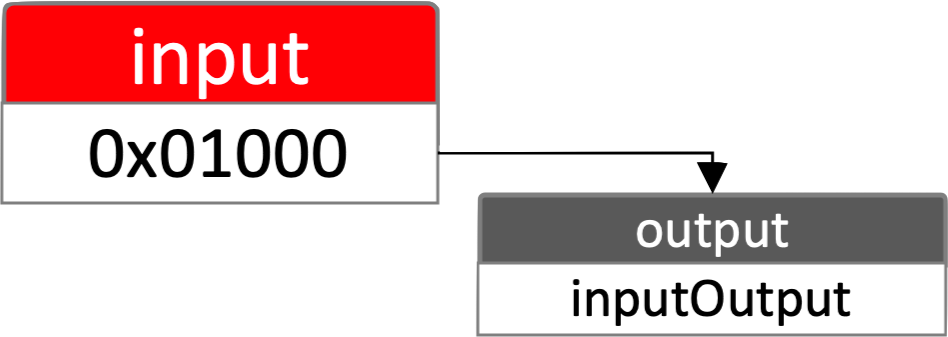{kind=link}
Hexagon-nn requires an INPUT op to be added with the output describing the dimensions and sizes of the graph’s input(s). It will read in tensors from hexagon_nn_tensordef during the hexagon_nn_execute call. See the Execute Graph section below for more details.
1 hexagon_nn_output outputs[] = {{.rank = 4,
2 .max_sizes = {1, 32, 32, 3, 0, 0, 0, 0},
3 .elementsize = 1,
4 .zero_offset = 0,
5 .stepsize = 0.0},
6 {.rank = 4,
7 .max_sizes = {1, 1, 1, 1, 0, 0, 0, 0},
8 .elementsize = 4,
9 .zero_offset = 0,
10 .stepsize = 0.0},
11 {.rank = (4),
12 .max_sizes = {1, 1, 1, 1, 0, 0, 0, 0},
13 .elementsize = 4,
14 .zero_offset = 0,
15 .stepsize = 0.0}};
16
17 hexagon_nn_append_node(nng_id, 0x01000, OP_INPUT, NN_PAD_NA, 0, 0, outputs, 3);
QNN Input
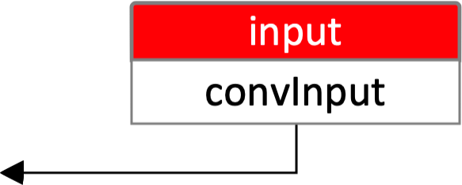{kind=link}
Note
The QNN input is an activation tensor defined to be of type QNN_TENSOR_TYPE_APP_WRITE.
1 // input (activation tensor)
2 uint32_t inputDimensions[] = {1, 32, 32, 3}
3 Qnn_Tensor_t inputTensor = QNN_TENSOR_INIT;
4 inputTensor.version = QNN_TENSOR_VERSION_2;
5 inputTensor.v2.id = 0;
6 inputTensor.v2.name = "convInput";
7 inputTensor.v2.type = QNN_TENSOR_TYPE_APP_WRITE;
8 inputTensor.v2.dataFormat = QNN_TENSOR_DATA_FORMAT_FLAT_BUFFER;
9 inputTensor.v2.dataType = QNN_DATATYPE_UFIXED_POINT_8;
10 inputTensor.v2.quantizeParams.encodingDefinition = QNN_DEFINITION_DEFINED;
11 inputTensor.v2.quantizeParams.quantizationEncoding = QNN_QUANTIZATION_ENCODING_SCALE_OFFSET;
12 inputTensor.v2.quantizeParams.scaleOffsetEncoding.scale = 0.0256975870579481;
13 inputTensor.v2.quantizeParams.scaleOffsetEncoding.offset = -132;
14 inputTensor.v2.rank = 4;
15 inputTensor.v2.dimensions = inputDimensions;
16 inputTensor.v2.memType = QNN_TENSORMEMTYPE_RAW;
17 inputTensor.v2.clientBuf = QNN_CLIENT_BUFFER_INIT;
18 inputTensor.v2.isDynamicDimensions = nullptr;
19 inputTensor.v2.sparseParams = QNN_SPARSE_PARAMS_INIT;
20 inputTensor.v2.isProduced = 0;
21
22 ret = QnnTensor_createGraphTensor(graph, &inputTensor);
Add Nodes - convolution¶
Hexagon-nn Convolution
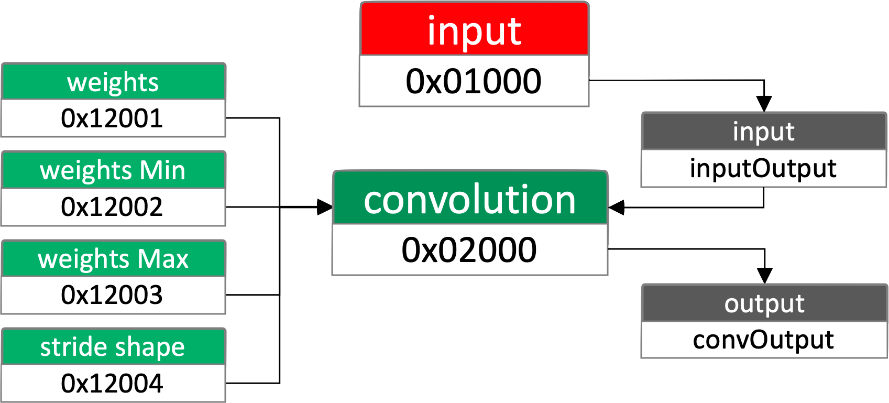{kind=link}
Hexagon-nn convolution node accepts 7 inputs
[3] input activation, min and max from the INPUT node
[3] weights, min and max added as constant nodes
[1] stride shape added as a constant node
and 3 outputs
[3] output activation, min and max
1 // create weight constant nodes
2 static uint8_t weights[108] = { 219, 39, 82, 157, 172, 80, ...};
3 static float weightsMin[1] = { -0.003076 };
4 static float weightsMax[1] = { 0.003076 };
5
6 ret = hexagon_nn_append_const_node(nng_id, 0x12001, 3, 3, 3, 4, (const uint8_t *) weights, 108);
7 ret = hexagon_nn_append_const_node(nng_id, 0x12002, 1, 1, 1, 1, (const uint8_t *) weightsMin, 4);
8 ret = hexagon_nn_append_const_node(nng_id, 0x12003, 1, 1, 1, 1, (const uint8_t *) weightsMax, 4);
9
10 // create stride constant node
11 ret = hexagon_nn_append_const_node(nng_id, 0x12004, 1, 1, 1, 1, (const uint8_t *) 0, 0);
12
13 // define the input
14 hexagon_nn_input convInputs[] = {
15 { // output of the INPUT node
16 .src_id = 0x01000,
17 .output_idx = 0,
18 },
19 { // weights
20 .src_id = 0x12001,
21 .output_idx = 0,
22 },
23 { // output of the INPUT min
24 .src_id = 0x01000,
25 .output_idx = 1,
26 },
27 { // output of the INPUT max
28 .src_id = 0x01000,
29 .output_idx = 2,
30 },
31 { // weights min
32 .src_id = 0x12002,
33 .output_idx = 0,
34 },
35 { // weights max
36 .src_id = 0x12003,
37 .output_idx = 0,
38 },
39 { // stride
40 .src_id = 0x12004,
41 .output_idx = 0,
42 }
43 };
44
45 // define the output
46 hexagon_nn_output convOutputs[] = {
47 {
48 .rank = 4,
49 .max_sizes = {1, 30, 30, 4, 0, 0, 0, 0},
50 .elementsize = 4,
51 .zero_offset = 0,
52 .stepsize = 0.0
53 },
54 {
55 .rank = 4,
56 .max_sizes = {1, 1, 1, 1, 0, 0, 0, 0},
57 .elementsize = 4,
58 .zero_offset = 0,
59 .stepsize = 0.0
60 },
61 {
62 .rank = 4,
63 .max_sizes = {1, 1, 1, 1, 0, 0, 0, 0},
64 .elementsize = 4,
65 .zero_offset = 0,
66 .stepsize = 0.0
67 }
68 };
69
70 // add the node to the graph
71 ret = hexagon_nn_append_node(nng_id, 0x02000, OP_QuantizedConv2d_8x8to32, NN_PAD_VALID, convInputs, 7, convOutputs, 3);
Note
Padding is specified as an input argument into the hexagon_nn_append_node API.
To add the biases after the convolution Hexagon-nn requires a biasAdd node to be appended to the graph.
This bias node accepts 6 inputs
[3] input activation, min and max from output of the convolution node
[3] biases, min and max added as constant nodes
and 3 outputs
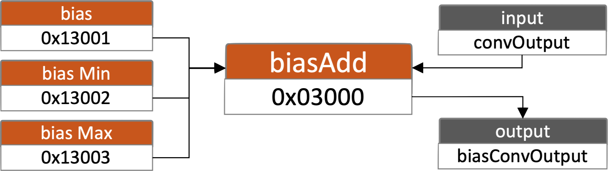
[3] output activation, min and max
{kind=link}
1 // create bias constant nodes
2 static int32_t convBias[10] = { -1315013842, ... , -2147483647 };
3 static float convBiasMin[1] = { -0.860266387462616 };
4 static float convBiasMax[1] = { 0.860266387462616 };
5
6 ret = hexagon_nn_append_const_node(nng_id, 0x13001, 3, 3, 3, 4, (const uint8_t *) convBias, 108);
7 ret = hexagon_nn_append_const_node(nng_id, 0x13002, 1, 1, 1, 1, (const uint8_t *) convBiasMin, 4);
8 ret = hexagon_nn_append_const_node(nng_id, 0x13003, 1, 1, 1, 1, (const uint8_t *) convBiasMax, 4);
9
10 hexagon_nn_input convBiasInputs[] = {
11 {
12 .src_id = 0x02000,
13 .output_idx = 0,
14 },
15 {
16 .src_id = 0x13001,
17 .output_idx = 0,
18 },
19 {
20 .src_id = 0x02000,
21 .output_idx = 1,
22 },
23 {
24 .src_id = 0x02000,
25 .output_idx = 2,
26 },
27 {
28 .src_id = 0x13002,
29 .output_idx = 0,
30 },
31 {
32 .src_id = 0x13003,
33 .output_idx = 0,
34 }
35 };
36
37 hexagon_nn_output convBiasOutputs[] = {
38 {
39 .rank = 4,
40 .max_sizes = {1, 1, 1, 10, 0, 0, 0, 0},
41 .elementsize = 4,
42 .zero_offset = 0,
43 .stepsize = 0.0
44 },
45 {
46 .rank = (4),
47 .max_sizes = {1, 1, 1, 1, 0, 0, 0, 0},
48 .elementsize = 4,
49 .zero_offset = 0,
50 .stepsize = 0.0
51 },
52 {
53 .rank = (4),
54 .max_sizes = {1, 1, 1, 1, 0, 0, 0, 0},
55 .elementsize = 4,
56 .zero_offset = 0,
57 .stepsize = 0.0
58 }
59 };
60
61 ret = hexagon_nn_append_node(nng_id, 0x03000, OP_QuantizedBiasAdd_32p32to32,
62 NN_PAD_NA, convBiasInputs, 6, convBiasOutputs, 3)
For QNN, the biases are added as a static tensor input to the convolution node. See convolution example below for details.
QNN Convolution
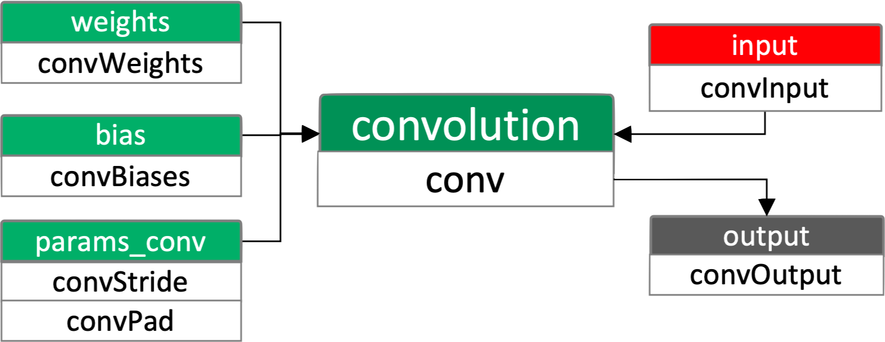{kind=link}
QNN convolution node accepts 4 inputs
[1] input activation tensor
[1] weights static tensor
[1] biases static tensor
[1] parameter list consisting of
[1] stride static tensor
[1] pad static tensor
and 1 output:
[1] output activation
Note
See the Finalize Graph section below for more details.
1 // output (activation tensor)
2 uint32_t convOutputDimensions[] = {1, 30, 30, 4};
3 Qnn_Tensor_t convOutputTensor = QNN_TENSOR_INIT;
4 convOutputTensor.version = QNN_TENSOR_VERSION_2;
5 convOutputTensor.v2.id = 0;
6 convOutputTensor.v2.name = "convOutput";
7 convOutputTensor.v2.type = QNN_TENSOR_TYPE_NATIVE;
8 convOutputTensor.v2.dataFormat = QNN_TENSOR_DATA_FORMAT_FLAT_BUFFER;
9 convOutputTensor.v2.dataType = QNN_DATATYPE_UFIXED_POINT_8;
10 convOutputTensor.v2.quantizeParams.encodingDefinition = QNN_DEFINITION_DEFINED;
11 convOutputTensor.v2.quantizeParams.quantizationEncoding = QNN_QUANTIZATION_ENCODING_SCALE_OFFSET;
12 convOutputTensor.v2.quantizeParams.scaleOffsetEncoding.scale = 0.0166513100266457;
13 convOutputTensor.v2.quantizeParams.scaleOffsetEncoding.offset = -107;
14 convOutputTensor.v2.rank = 4;
15 convOutputTensor.v2.dimensions = convOutputDimensions;
16 convOutputTensor.v2.memType = QNN_TENSORMEMTYPE_RAW;
17 convOutputTensor.v2.clientBuf = QNN_CLIENT_BUFFER_INIT;
18 convOutputTensor.v2.isDynamicDimensions = nullptr;
19 convOutputTensor.v2.sparseParams = QNN_SPARSE_PARAMS_INIT;
20 convOutputTensor.v2.isProduced = 0;
21
22 ret = QnnTensor_createGraphTensor(graph, &convOutputTensor);
23
24 // weights (static tensor)
25 static uint8_t convWeights[] = {232, 177, 126, 160, 15, 171, ...};
26 uint32_t convWeightsDimensions[] = {3, 3, 3, 4};
27 Qnn_Tensor_t convWeightsTensor = QNN_TENSOR_INIT;
28 convWeightsTensor.version = QNN_TENSOR_VERSION_2;
29 convWeightsTensor.v2.id = 0;
30 convWeightsTensor.v2.name = "convWeights";
31 convWeightsTensor.v2.type = QNN_TENSOR_TYPE_STATIC;
32 convWeightsTensor.v2.dataFormat = QNN_TENSOR_DATA_FORMAT_FLAT_BUFFER;
33 convWeightsTensor.v2.dataType = QNN_DATATYPE_UFIXED_POINT_8;
34 convWeightsTensor.v2.quantizeParams.encodingDefinition = QNN_DEFINITION_DEFINED;
35 convWeightsTensor.v2.quantizeParams.quantizationEncoding = QNN_QUANTIZATION_ENCODING_SCALE_OFFSET;
36 convWeightsTensor.v2.quantizeParams.scaleOffsetEncoding.scale = 0.0012544898781925;
37 convWeightsTensor.v2.quantizeParams.scaleOffsetEncoding.offset = -129;
38 convWeightsTensor.v2.rank = 4;
39 convWeightsTensor.v2.dimensions = convWeightsDimensions;
40 convWeightsTensor.v2.memType = QNN_TENSORMEMTYPE_RAW;
41 convWeightsTensor.v2.clientBuf.data = convWeights;
42 convWeightsTensor.v2.clientBuf.dataSize = 108;
43 convWeightsTensor.v2.isDynamicDimensions = nullptr;
44 convWeightsTensor.v2.sparseParams = QNN_SPARSE_PARAMS_INIT;
45 convWeightsTensor.v2.isProduced = 0;
46
47 ret = QnnTensor_createGraphTensor(graph, &convWeightsTensor);
48
49 // biases (static tensor)
50 static uint8_t convBiases[] = {78, 255, 80, 157};
51 uint32_t convBiasesDimensions[] = {4};
52 Qnn_Tensor_t convBiasesTensor = QNN_TENSOR_INIT;
53 convBiasesTensor.version = QNN_TENSOR_VERSION_2;
54 convBiasesTensor.v2.id = 0;
55 convBiasesTensor.v2.name = "convBiases";
56 convBiasesTensor.v2.type = QNN_TENSOR_TYPE_STATIC;
57 convBiasesTensor.v2.dataFormat = QNN_TENSOR_DATA_FORMAT_FLAT_BUFFER;
58 convBiasesTensor.v2.dataType = QNN_DATATYPE_UFIXED_POINT_8;
59 convBiasesTensor.v2.quantizeParams.encodingDefinition = QNN_DEFINITION_DEFINED;
60 convBiasesTensor.v2.quantizeParams.quantizationEncoding = QNN_QUANTIZATION_ENCODING_SCALE_OFFSET;
61 convBiasesTensor.v2.quantizeParams.scaleOffsetEncoding.scale = 0.0006514320266433;
62 convBiasesTensor.v2.quantizeParams.scaleOffsetEncoding.offset = 0;
63 convBiasesTensor.v2.rank = 1;
64 convBiasesTensor.v2.dimensions = convBiasesDimensions;
65 convBiasesTensor.v2.memType = QNN_TENSORMEMTYPE_RAW;
66 convBiasesTensor.v2.clientBuf.data = convBiases;
67 convBiasesTensor.v2.clientBuf.dataSize = 4;
68 convBiasesTensor.v2.isDynamicDimensions = nullptr;
69 convBiasesTensor.v2.sparseParams = QNN_SPARSE_PARAMS_INIT;
70 convBiasesTensor.v2.isProduced = 0;
71
72 ret = QnnTensor_createGraphTensor(graph, &convBiasesTensor);
73
74 // stride (static tensor)
75 uint32_t convStride[] = {1, 1};
76 uint32_t convStrideDimensions[] = {2};
77 Qnn_Tensor_t convStrideTensor = QNN_TENSOR_INIT;
78 convStrideTensor.version = QNN_TENSOR_VERSION_2;
79 convStrideTensor.v2.id = 0;
80 convStrideTensor.v2.name = "convStride";
81 convStrideTensor.v2.type = QNN_TENSOR_TYPE_STATIC;
82 convStrideTensor.v2.dataFormat = QNN_TENSOR_DATA_FORMAT_FLAT_BUFFER;
83 convStrideTensor.v2.dataType = QNN_DATATYPE_UINT_32;
84 convStrideTensor.v2.quantizeParams.encodingDefinition = QNN_DEFINITION_UNDEFINED;
85 convStrideTensor.v2.quantizeParams.quantizationEncoding = QNN_QUANTIZATION_ENCODING_UNDEFINED;
86 convStrideTensor.v2.quantizeParams.scaleOffsetEncoding.scale = 0.0;
87 convStrideTensor.v2.quantizeParams.scaleOffsetEncoding.offset = 0;
88 convStrideTensor.v2.rank = 1;
89 convStrideTensor.v2.dimensions = convStrideDimensions;
90 convStrideTensor.v2.clientBuf.data = convStride;
91 convStrideTensor.v2.clientBuf.dataSize = 8;
92 convStrideTensor.v2.isDynamicDimensions = nullptr;
93 convStrideTensor.v2.sparseParams = QNN_SPARSE_PARAMS_INIT;
94 convStrideTensor.v2.isProduced = 0;
95
96 ret = QnnTensor_createGraphTensor(graph, &convStrideTensor);
97
98 // pad (static tensor)
99 uint32_t convPad[] = {0, 0, 0, 0};
100 uint32_t convPadDimensions[] = {2, 2};
101 Qnn_Tensor_t convPadTensor = QNN_TENSOR_INIT;
102 convPadTensor.version = QNN_TENSOR_VERSION_2;
103 convPadTensor.v2.id = 0;
104 convPadTensor.v2.name = "convPad";
105 convPadTensor.v2.type = QNN_TENSOR_TYPE_STATIC;
106 convPadTensor.v2.dataFormat = QNN_TENSOR_DATA_FORMAT_FLAT_BUFFER;
107 convPadTensor.v2.dataType = QNN_DATATYPE_UINT_32;
108 convPadTensor.v2.quantizeParams.encodingDefinition = QNN_DEFINITION_UNDEFINED;
109 convPadTensor.v2.quantizeParams.quantizationEncoding = QNN_QUANTIZATION_ENCODING_UNDEFINED;
110 convPadTensor.v2.quantizeParams.scaleOffsetEncoding.scale = 0.0;
111 convPadTensor.v2.quantizeParams.scaleOffsetEncoding.offset = 0;
112 convPadTensor.v2.rank = 2;
113 convPadTensor.v2.dimensions = convPadDimensions;
114 convPadTensor.v2.clientBuf.data = convPad;
115 convPadTensor.v2.clientBuf.dataSize = 16;
116 convPadTensor.v2.isDynamicDimensions = nullptr;
117 convPadTensor.v2.sparseParams = QNN_SPARSE_PARAMS_INIT;
118 convPadTensor.v2.isProduced = 0;
119
120 ret = QnnTensor_createGraphTensor(graph, &convPadTensor);
121
122 Qnn_Param_t convParamsList[2] = {QNN_PARAM_INIT, QNN_PARAM_INIT};
123 convParamsList[0].paramType = QNN_PARAMTYPE_TENSOR;
124 convParamsList[0].name = QNN_OP_CONV_2D_PARAM_STRIDE;
125 convParamsList[0].tensorParam = convStrideTensor;
126 convParamsList[1].paramType = QNN_PARAMTYPE_TENSOR;
127 convParamsList[1].name = QNN_OP_CONV_2D_PARAM_PAD_AMOUNT;
128 convParamsList[1].tensorParam = convPadTensor;
129
130 // create a list of all input tensors
131 Qnn_Tensor_t convInputList[3] = {
132 inputTensor,
133 convWeightsTensor,
134 convBiasesTensor
135 };
136
137 // create a list of all output tensors
138 Qnn_Tensor_t convOutputList[1] = {convOutputTensor};
139
140 // operation definition
141 Qnn_OpConfig_t convOpDefinition = QNN_OPCONFIG_INIT;
142 convOpDefinition.v1.name = "conv";
143 convOpDefinition.v1.packageName = "qti.aisw";
144 convOpDefinition.v1.typeName = QNN_OP_CONV_2D;
145 convOpDefinition.v1.numOfParams = 2;
146 convOpDefinition.v1.params = convParamsList;
147 convOpDefinition.v1.numOfInputs = 3;
148 convOpDefinition.v1.inputTensors = convInputList;
149 convOpDefinition.v1.numOfOutputs = 1;
150 convOpDefinition.v1.outputTensors = convOutputList;
151
152 // add the node to the graph
153 ret = QnnGraph_addNode(graph, convOpDefinition);
Add Nodes - fully connected (fc)¶
Hexagon-nn FC
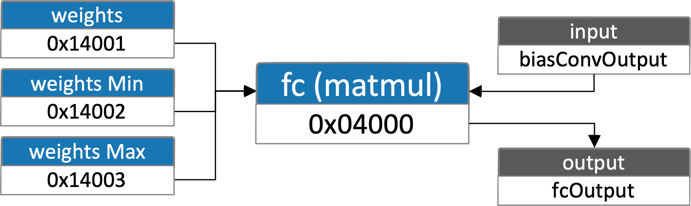{kind=link}
Hexagon-nn fully connected node is represented by the MatMul operation. It accepts 6 inputs.
[3] input activation, min and max from the output of the convolution biasAdd node
[3] weights, min and max added as constant nodes
and 3 outputs
[3] output activation, min and max
1 // create bias constant nodes
2 static int32_t bias[10] = { -1315013842, ... , -2147483647 };
3 static float biasMin[1] = { -0.860266387462616 };
4 static float biasMax[1] = { 0.860266387462616 };
5
6 ret = hexagon_nn_append_const_node(nng_id, 0x14001, 3, 3, 3, 4,
7 (const uint8_t *) weights, 108);
8
9 ret = hexagon_nn_append_const_node(nng_id, 0x14002, 1, 1, 1, 1,
10 (const uint8_t *) weightsMin, 4);
11
12 ret = hexagon_nn_append_const_node(nng_id, 0x14003, 1, 1, 1, 1,
13 (const uint8_t *) weightsMax, 4);
14
15 hexagon_nn_input fcInputs[] = {
16 {
17 .src_id = 0x03000,
18 .output_idx = 0,
19 },
20 {
21 .src_id = 0x14001,
22 .output_idx = 0,
23 },
24 {
25 .src_id = 0x03001,
26 .output_idx = 1,
27 },
28 {
29 .src_id = 0x03002,
30 .output_idx = 2,
31 },
32 {
33 .src_id = 0x14002,
34 .output_idx = 0,
35 },
36 {
37 .src_id = 0x14003,
38 .output_idx = 0,
39 }
40 };
41
42 hexagon_nn_output fcOutputs[] = {
43 {
44 .rank = 4,
45 .max_sizes = {1, 1, 1, 10, 0, 0, 0, 0},
46 .elementsize = 4,
47 .zero_offset = 2,
48 .stepsize = 0.0
49 },
50 {
51 .rank = 4,
52 .max_sizes = {1, 1, 1, 1, 0, 0, 0, 0},
53 .elementsize = 4,
54 .zero_offset = 0,
55 .stepsize = 0.0
56 },
57 {
58 .rank = 4,
59 .max_sizes = {1, 1, 1, 1, 0, 0, 0, 0},
60 .elementsize = 4,
61 .zero_offset = 0,
62 .stepsize = 0.00000115
63 }
64 };
65
66 ret = hexagon_nn_append_node(nng_id, 0x04000, OP_QuantizedMatMul_8x8to32,
67 NN_PAD_NA, fcInputs, 6, fcOutputs, 3);
A bias node follows the fully connected node and accepts 6 inputs
[3] input activation, min and max from the output of the MatMul (fc) node
[3] biases, min and max added as constant nodes
and 3 outputs
[3] output activation, min and max
For QNN, the biases are added as a static tensor input to the fully connected (FC) node. See the QNN FC example below for details.
QNN FC
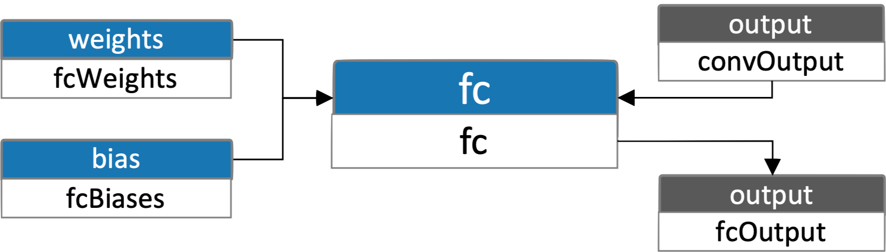{kind=link}
QNN fully connected node accepts 3 inputs:
[1] output activation from the convolution node
[1] weights static tensor
[1] biases static tensor
and 1 output
[1] output activation
1 // output (activation tensor)
2 uint32_t fcOutputDimensions[] = {1, 10};
3 Qnn_Tensor_t fcOutputTensor = QNN_TENSOR_INIT;
4 fcOutputTensor.version = QNN_TENSOR_VERSION_2;
5 fcOutputTensor.v2.id = 0;
6 fcOutputTensor.v2.name = "fcOutput";
7 fcOutputTensor.v2.type = QNN_TENSOR_TYPE_NATIVE;
8 fcOutputTensor.v2.dataFormat = QNN_TENSOR_DATA_FORMAT_FLAT_BUFFER;
9 fcOutputTensor.v2.dataType = QNN_DATATYPE_UFIXED_POINT_8;
10 fcOutputTensor.v2.quantizeParams.encodingDefinition = QNN_DEFINITION_DEFINED;
11 fcOutputTensor.v2.quantizeParams.quantizationEncoding = QNN_QUANTIZATION_ENCODING_SCALE_OFFSET;
12 fcOutputTensor.v2.quantizeParams.scaleOffsetEncoding.scale = 0.0024064707104117;
13 fcOutputTensor.v2.quantizeParams.scaleOffsetEncoding.offset = -151;
14 fcOutputTensor.v2.rank = 2;
15 fcOutputTensor.v2.dimensions = fcOutputDimensions;
16 fcOutputTensor.v2.memType = QNN_TENSORMEMTYPE_RAW;
17 fcOutputTensor.v2.clientBuf = QNN_CLIENT_BUFFER_INIT;
18 fcOutputTensor.v2.isDynamicDimensions = nullptr;
19 fcOutputTensor.v2.sparseParams = QNN_SPARSE_PARAMS_INIT;
20 fcOutputTensor.v2.isProduced = 0;
21
22 ret = QnnTensor_createGraphTensor(graph, &fcOutputTensor);
23
24 // weights (static tensor)
25 static uint8_t fcWeights[] = {223, 128, 73, 137, 199, 155, ...};
26 uint32_t fcWeightsDimensions[] = {10, 3600};
27 Qnn_Tensor_t fcWeightsTensor = QNN_TENSOR_INIT;
28 fcWeightsTensor.version = QNN_TENSOR_VERSION_2;
29 fcWeightsTensor.v2.id = 0;
30 fcWeightsTensor.v2.name = "fcWeights";
31 fcWeightsTensor.v2.type = QNN_TENSOR_TYPE_STATIC;
32 fcWeightsTensor.v2.dataFormat = QNN_TENSOR_DATA_FORMAT_FLAT_BUFFER;
33 fcWeightsTensor.v2.dataType = QNN_DATATYPE_UFIXED_POINT_8;
34 fcWeightsTensor.v2.quantizeParams.encodingDefinition = QNN_DEFINITION_DEFINED;
35 fcWeightsTensor.v2.quantizeParams.quantizationEncoding = QNN_QUANTIZATION_ENCODING_SCALE_OFFSET;
36 fcWeightsTensor.v2.quantizeParams.scaleOffsetEncoding.scale = 0.0000707526414772;
37 fcWeightsTensor.v2.quantizeParams.scaleOffsetEncoding.offset = -128;
38 fcWeightsTensor.v2.rank = 2;
39 fcWeightsTensor.v2.dimensions = fcWeightsDimensions;
40 fcWeightsTensor.v2.clientBuf.data = fcWeights;
41 fcWeightsTensor.v2.clientBuf.dataSize = 36000;
42 fcWeightsTensor.v2.isDynamicDimensions = nullptr;
43 fcWeightsTensor.v2.sparseParams = QNN_SPARSE_PARAMS_INIT;
44 fcWeightsTensor.v2.isProduced = 0;
45
46 ret = QnnTensor_createGraphTensor(graph, &fcWeightsTensor);
47
48 // biases (static tensor)
49 static uint8_t fcBiases[] = {230, 174, 41, 246, 26, 247, ...};
50 uint32_t fcBiasesDimensions[] = {10};
51 Qnn_Tensor_t fcBiasesTensor = QNN_TENSOR_INIT;
52 fcBiasesTensor.version = QNN_TENSOR_VERSION_2;
53 fcBiasesTensor.v2.id = 0;
54 fcBiasesTensor.v2.name = "fcBiases";
55 fcBiasesTensor.v2.type = QNN_TENSOR_TYPE_STATIC;
56 fcBiasesTensor.v2.dataFormat = QNN_TENSOR_DATA_FORMAT_FLAT_BUFFER;
57 fcBiasesTensor.v2.dataType = QNN_DATATYPE_UFIXED_POINT_8;
58 fcBiasesTensor.v2.quantizeParams.encodingDefinition = QNN_DEFINITION_DEFINED;
59 fcBiasesTensor.v2.quantizeParams.quantizationEncoding = QNN_QUANTIZATION_ENCODING_SCALE_OFFSET;
60 fcBiasesTensor.v2.quantizeParams.scaleOffsetEncoding.scale = 0.0000581612985115;
61 fcBiasesTensor.v2.quantizeParams.scaleOffsetEncoding.offset = -116;
62 fcBiasesTensor.v2.rank = 1;
63 fcBiasesTensor.v2.dimensions = fcBiasesDimensions;
64 fcBiasesTensor.v2.clientBuf.data = fcBiases;
65 fcBiasesTensor.v2.clientBuf.dataSize = 10;
66 fcBiasesTensor.v2.isDynamicDimensions = nullptr;
67 fcBiasesTensor.v2.sparseParams = QNN_SPARSE_PARAMS_INIT;
68 fcBiasesTensor.v2.isProduced = 0;
69
70 ret = QnnTensor_createGraphTensor(graph, &fcBiasesTensor);
71
72 // create a list of all input tensors
73 Qnn_Tensor_t fcInputList[3] = {
74 convOutputTensor, // output activation from convolution node
75 fcWeightsTensor,
76 fcBiasesTensor
77 };
78
79 // create a list of all output tensors
80 Qnn_Tensor_t fcOutputList[1] = {fcOutputTensor};
81
82 // operation definition
83 Qnn_OpConfig_t fcOpDefinition = QNN_OPCONFIG_INIT;
84 fcOpDefinition.v1.name = "fc";
85 fcOpDefinition.v1.packageName = "qti.aisw";
86 fcOpDefinition.v1.typeName = QNN_OP_FULLY_CONNECTED;
87 fcOpDefinition.v1.numOfParams = 0;
88 fcOpDefinition.v1.params = nullptr;
89 fcOpDefinition.v1.numOfInputs = 3;
90 fcOpDefinition.v1.inputTensors = fcInputList;
91 fcOpDefinition.v1.numOfOutputs = 1;
92 fcOpDefinition.v1.outputTensors = fcOutputList;
93
94 // add the node to the graph
95 ret = QnnGraph_addNode(graph, fcOpDefinition);
Add Nodes - SoftMax¶
Hexagon-nn SoftMax
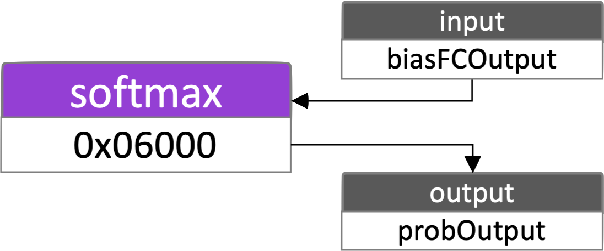{kind=link}
Hexagon-nn fully SoftMax node accepts 3 inputs
[3] input activation from the output of the fully connected BiasAdd node
and 1 output
[1] output activation
1 hexagon_nn_input softMaxInputs[] = {
2 {
3 .src_id = (0x05000),
4 .output_idx = (0),
5 },
6 {
7 .src_id = (0x05001),
8 .output_idx = (1),
9 },
10 {
11 .src_id = (0x05002),
12 .output_idx = (2),
13 }
14 };
15
16 hexagon_nn_output softMaxOutputs[] = {
17 {
18 .rank = 4,
19 .max_sizes = {1, 1, 1, 10, 0, 0, 0, 0},
20 .elementsize = 4,
21 .zero_offset = 0,
22 .stepsize = 0.0
23 }
24 };
25
26 ret = hexagon_nn_append_node(nng_id, 0x00024002, OP_Softmax_uint8,
27 NN_PAD_NA, softMaxInputs, 3, softMaxOutputs, 1);
QNN SoftMax
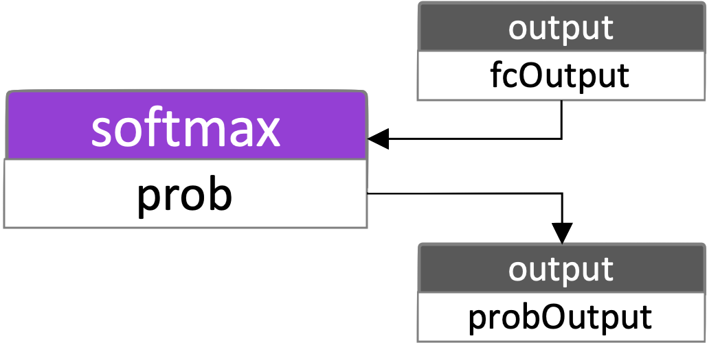{kind=link}
QNN SoftMax node accepts 1 input
[1] input activation from the output of the fully connected node
and 1 output
[1] output activation
1 // output (activation tensor)
2 uint32_t softMaxOutputDimensions[] = {1, 10};
3 Qnn_Tensor_t softMaxOutputTensor = QNN_TENSOR_INIT;
4 softMaxOutputTensor.version = QNN_TENSOR_VERSION_2;
5 softMaxOutputTensor.v2.id = 0;
6 softMaxOutputTensor.v2.name = "probOutput";
7 softMaxOutputTensor.v2.type = QNN_TENSOR_TYPE_APP_READ;
8 softMaxOutputTensor.v2.dataFormat = QNN_TENSOR_DATA_FORMAT_FLAT_BUFFER;
9 softMaxOutputTensor.v2.dataType = QNN_DATATYPE_UFIXED_POINT_8;
10 softMaxOutputTensor.v2.quantizeParams.encodingDefinition = QNN_DEFINITION_DEFINED;
11 softMaxOutputTensor.v2.quantizeParams.quantizationEncoding = QNN_QUANTIZATION_ENCODING_SCALE_OFFSET;
12 softMaxOutputTensor.v2.quantizeParams.scaleOffsetEncoding.scale = 0.00390625;
13 softMaxOutputTensor.v2.quantizeParams.scaleOffsetEncoding.offset = 0;
14 softMaxOutputTensor.v2.rank = 2;
15 softMaxOutputTensor.v2.dimensions = softMaxOutputDimensions;
16 softMaxOutputTensor.v2.memType = QNN_TENSORMEMTYPE_RAW;
17 softMaxOutputTensor.v2.clientBuf = QNN_CLIENT_BUFFER_INIT;
18 softMaxOutputTensor.v2.isDynamicDimensions = nullptr;
19 softMaxOutputTensor.v2.sparseParams = QNN_SPARSE_PARAMS_INIT;
20 softMaxOutputTensor.v2.isProduced = 0;
21
22 ret = QnnTensor_createGraphTensor(graph, &softMaxOutputTensor);
23
24 // create a list of all input tensors
25 Qnn_Tensor_t softMaxInputList[1] = {fcOutputTensor};
26
27 // create a list of all output tensors
28 Qnn_Tensor_t softMaxOutputList[1] = {softMaxOutputTensor};
29
30 // operation definition
31 Qnn_OpConfig_t softMaxOpDefinition = QNN_OPCONFIG_INIT;
32 softMaxOpDefinition.v1.name = "prob";
33 softMaxOpDefinition.v1.packageName = "qti.aisw";
34 softMaxOpDefinition.v1.typeName = QNN_OP_SOFTMAX;
35 softMaxOpDefinition.v1.numOfParams = 0;
36 softMaxOpDefinition.v1.params = nullptr;
37 softMaxOpDefinition.v1.numOfInputs = 1;
38 softMaxOpDefinition.v1.inputTensors = softMaxInputList;
39 softMaxOpDefinition.v1.numOfOutputs = 1;
40 softMaxOpDefinition.v1.outputTensors = softMaxOutputList;
41
42 // add the node to the graph
43 ret = QnnGraph_addNode(graph, softMaxOpDefinition);
Add Nodes - output¶
Hexagon-nn output
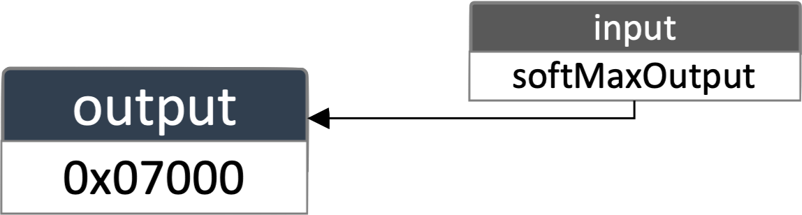{kind=link}
Hexagon-nn requires an OUTPUT node to be added with inputs referring to tensors that will be the graph’s output(s). It will output tensors to the hexagon_nn_tensordef provided during the call to hexagon_nn_execute. See the Execute Graph section below for more details.
1 hexagon_nn_input outputInputs[] = {{
2 .src_id = (0x06000),
3 .output_idx = (0),
4 }};
5
6 hexagon_nn_append_node(nng_id, 0x07000, OP_OUTPUT, NN_PAD_NA, outputInputs, 1, 0, 0);
QNN Output
Note
The QNN output is an activation tensor defined to be of type QNN_TENSOR_TYPE_APP_READ. See QNN section in Add Nodes - SoftMax for example.
Finalize Graph¶
Once the Hexagon-nn graph is constructed (above steps) it needs to be prepared (finalized) for execution.
1res = hexagon_nn_prepare(nng_id);
For QNN the graph’s input and output tensors need to be created and registered before finalizing the graph. These tensors were registered when the QNN nodes were added to the graph.
Note
The QNN input is an activation tensor defined to be of type QNN_TENSOR_TYPE_APP_WRITE. The QNN output is an activation tensor defined to be of type QNN_TENSOR_TYPE_APP_READ.
1 // don't forget to do all your error checking (ret == QNN_SUCCESS)
2 Qnn_ProfileHandle_t profile{nullptr};
3 Qnn_SignalHandle_t signal{nullptr};
4 ret = QnnGraph_finalize(graph, profile, signal);
Execute Graph¶
Hexagon-nn
The input and output tensor definitions need to be initialized before graph execution.
Hexagon-nn uses hexagon_nn_tensordef structures to describe the tensor attributes for the inputs and outputs.
1 static float inputData = { 15.0, 82.0, 85.0, 71.0, 20.0, ... };
2 static float inputDataMin = { -0.003076 };
3 static float inputDataMax = { 0.003076 };
4 static int32_t inputDataNeedsQuantize [1] = { 1 };
5
6 hexagon_nn_tensordef in_tensor_defs[] =
7 {
8 {
9 .batches = 1,
10 .height = 32,
11 .width = 32,
12 .depth = 3,
13 .data = (unsigned char *) inputData,
14 .dataLen = 12288,
15 .data_valid_len = 12288,
16 .unused = 0,
17 },
18 {
19 .batches = 1,
20 .height = 1,
21 .width = 1,
22 .depth = 1,
23 .data = (unsigned char *) inputDataMin,
24 .dataLen = 4,
25 .data_valid_len = 4,
26 unused = 0,
27 },
28 {
29 .batches = 1,
30 .height = 1,
31 .width = 1,
32 .depth = 1,
33 .data = (unsigned char *) inputDataMax,
34 .dataLen = 4,
35 .data_valid_len = 4,
36 .unused = 0,
37 },
38 {
39 .batches = 1,
40 .height = 1,
41 .width = 1,
42 .depth = 1,
43 .data = (unsigned char *) inputDataNeedsQuantize,
44 .dataLen = 4,
45 .data_valid_len = 4,
46 .unused = 0,
47 }
48 };
49
50 float outData[10] = { };
51
52 hexagon_nn_tensordef out_tensor_defs[] = {
53 {
54 .batches = (1),
55 .height = (1),
56 .width = (1),
57 .depth = (10),
58 .data = (unsigned char *) outData,
59 .dataLen = (40),
60 .data_valid_len = (40),
61 .unused = 0,
62 }};
63
64 ret = hexagon_nn_execute_new(nng_id, in_tensor_defs, 4, out_tensor_defs, 1);
QNN
QNN uses the same Qnn_Tensor_t structures to describe the tensor attributes as well as supply input activation data, and collect output activation data. Note that the tensors are in quantized format to keep consistent with the input and output tensor types of the graph created above.
1 // Setup input buffer
2 const uint32_t inputDataSize = 1 * 32 * 32 * 3 * sizeof(uint8_t);
3 uint8_t *inputData = (uint8_t *)malloc(inputDataSize);
4 memset(inputData, 0, inputDataSize);
5
6 // Fill in the quantized input tensor data
7 ...
8
9 uint32_t graphInDimensions[] = {1, 32, 32, 3};
10 Qnn_Tensor_t graphInTensor = QNN_TENSOR_INIT;
11 graphInTensor.version = QNN_TENSOR_VERSION_2;
12 graphInTensor.v2.id = inputTensor.v2.id;
13 graphInTensor.v2.name = "graphIn";
14 graphInTensor.v2.type = QNN_TENSOR_TYPE_APP_WRITE;
15 graphInTensor.v2.dataFormat = QNN_TENSOR_DATA_FORMAT_FLAT_BUFFER;
16 graphInTensor.v2.dataType = QNN_DATATYPE_UFIXED_POINT_8;
17 graphInTensor.v2.quantizeParams.encodingDefinition = QNN_DEFINITION_DEFINED;
18 graphInTensor.v2.quantizeParams.quantizationEncoding = QNN_QUANTIZATION_ENCODING_SCALE_OFFSET;
19 graphInTensor.v2.quantizeParams.scaleOffsetEncoding.scale = 0.0256975870579481;
20 graphInTensor.v2.quantizeParams.scaleOffsetEncoding.offset = -132;
21 graphInTensor.v2.rank = 4;
22 graphInTensor.v2.dimensions = graphInDimensions;
23 graphInTensor.v2.memType = QNN_TENSORMEMTYPE_RAW;
24 graphInTensor.v2.clientBuf.data = inputData;
25 graphInTensor.v2.clientBuf.dataSize = inputDataSize;
26 graphInTensor.v2.isDynamicDimensions = nullptr;
27 graphInTensor.v2.sparseParams = QNN_SPARSE_PARAMS_INIT;
28 graphInTensor.v2.isProduced = 0;
29
30 // Setup output buffer
31 const uint32_t outputDataSize = 10 * sizeof(uint8_t);
32 uint8_t *outputData = (uint8_t *)malloc(outputDataSize);
33 memset(outputData, 0, outputDataSize);
34
35 uint32_t graphOutDimensions[] = {1, 10};
36 Qnn_Tensor_t graphOutTensor = QNN_TENSOR_INIT;
37 graphOutTensor.version = QNN_TENSOR_VERSION_2;
38 graphOutTensor.v2.id = softMaxOutputTensor.v2.id;
39 graphOutTensor.v2.name = "graphOut";
40 graphOutTensor.v2.type = QNN_TENSOR_TYPE_APP_READ;
41 graphOutTensor.v2.dataFormat = QNN_TENSOR_DATA_FORMAT_FLAT_BUFFER;
42 graphOutTensor.v2.dataType = QNN_DATATYPE_UFIXED_POINT_8;
43 graphOutTensor.v2.quantizeParams.encodingDefinition = QNN_DEFINITION_DEFINED;
44 graphOutTensor.v2.quantizeParams.quantizationEncoding = QNN_QUANTIZATION_ENCODING_SCALE_OFFSET;
45 graphOutTensor.v2.quantizeParams.scaleOffsetEncoding.scale = 0.00390625;
46 graphOutTensor.v2.quantizeParams.scaleOffsetEncoding.offset = 0;
47 graphOutTensor.v2.rank = 2;
48 graphOutTensor.v2.dimensions = graphOutDimensions;
49 graphOutTensor.v2.memType = QNN_TENSORMEMTYPE_RAW;
50 graphOutTensor.v2.clientBuf.data = outputData;
51 graphOutTensor.v2.clientBuf.dataSize = outputDataSize;
52 graphOutTensor.v2.isDynamicDimensions = nullptr;
53 graphOutTensor.v2.sparseParams = QNN_SPARSE_PARAMS_INIT;
54 graphOutTensor.v2.isProduced = 0;
55
56 ret = QnnGraph_execute(graph, &graphInTensor, 1, &graphOutTensor, 1, profile, signal);
57
58 // Read the quantized output tensor data and dequantize the data if necessary
59 ...
Destroy Graph¶
The final step is to release all the resources associated with the graph.
1ret = hexagon_nn_teardown(nng_id);
For QNN the graph resources are associated with the context so freeing the context will free all resources owned by the graph. Afterwards, device resources need to be released. Finally if the backend accelerator is not longer required, then it’s resources can also be freed.
1QnnContext_free(context, profile);
2
3QnnDevice_free(device);
4
5QnnBackend_free(backend);
6
7QnnLog_free(logger);